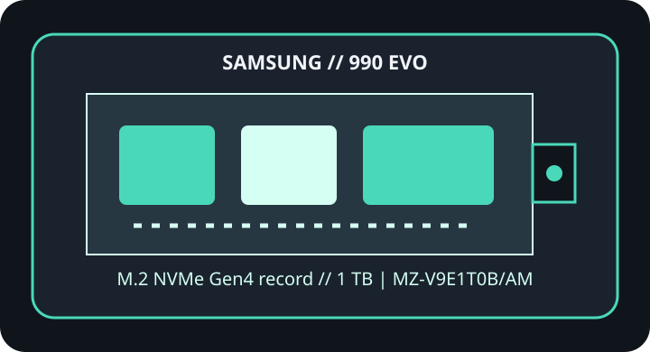

[ IDENTIFIED PRODUCT // PCIE 4.0 NVME ]
Samsung 990 EVO 1 TB
1 TB M.2 2280 SSD identified by the complete manufacturer part number below. Capacity, heatsink, interface mode and regional suffix can change specifications; do not transfer ratings from a neighboring SKU.

SKU IDENTIFICATION: Samsung 990 EVO, 1 TB, part number MZ-V9E1T0B/AM. Verify the complete label, hardware revision and firmware before installation.
Manufacturer-identified specifications
| Product / exact MPN | Samsung 990 EVO 1 TB (MZ-V9E1T0B/AM) |
|---|---|
| Capacity / form factor | 1 TB; M.2 2280. |
| Interface / host lanes | PCIe 4.0 x4 / PCIe 5.0 x2; NVMe 2.0. Published maxima require the compatible host generation and lane configuration; an older or lane-shared host can negotiate lower throughput. |
| Controller | Samsung in-house controller; exact controller model not specified in the manufacturer references cited. |
| NAND | Samsung V-NAND TLC. |
| Sequential performance | Up to 5,000 MB/s sequential read and 4,200 MB/s sequential write. Vendor-rated figures apply under manufacturer test conditions, not as guaranteed sustained real-world results. |
| Endurance / warranty | 600 TBW; five-year limited warranty or TBW limit, whichever comes first. |
| Thermal package | Operating temperature: 0–70 °C (manufacturer specification). Bare M.2 module; follow host thermal-pad/heatsink guidance. |
Firmware, host compatibility & thermal cautions
- Samsung Magician and Samsung SSD support documents are the manufacturer paths for checking drive health and any firmware applicable to this exact model.
- A compatible M.2 socket must support NVMe. For maximum link capability use PCIe 4.0 x4 or the drive’s supported PCIe 5.0 x2 mode; verify lane sharing and boot support in the host manual.
- Check M.2 keying, slot length, single-/double-sided clearance, lane sharing, and system BIOS/UEFI support in the exact host manual; M.2 shape alone does not prove NVMe or boot compatibility.
- Follow the drive and host maker’s heatsink and thermal-pad instructions. Keep airflow around the controller area, do not stack thermal materials or remove factory labels/cooling without explicit guidance, and expect sustained performance to vary with temperature and workload.
- Shut down and remove standby power as instructed before installation; use ESD precautions. Back up data and retain recovery media and encryption keys before changing storage or updating firmware.
Manufacturer product, specification & service references
- Samsung 990 EVO 1 TB — exact product pageManufacturer source for product identity and the product-specific specifications referenced above.
- Samsung Semiconductor — SSD product documentsSecond manufacturer source for technical documentation, product support or model features.
Ratings are included only where published by the manufacturer in the linked product references; undisclosed controller/NAND details and capacity-specific values are not inferred. Firmware availability and revisions can change; verify against the physical model and host before service.